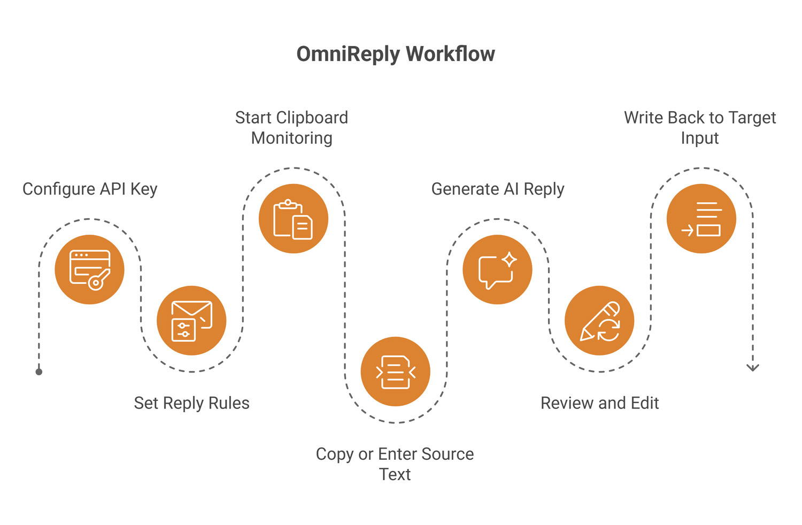
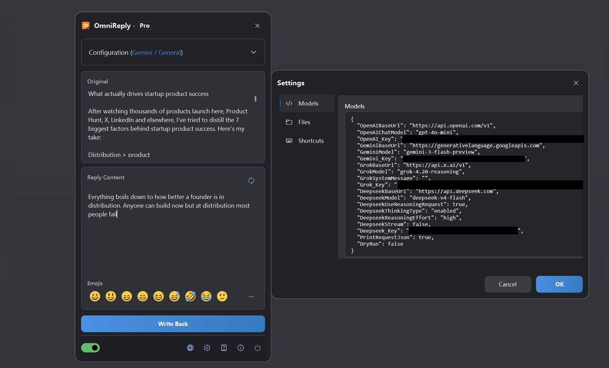
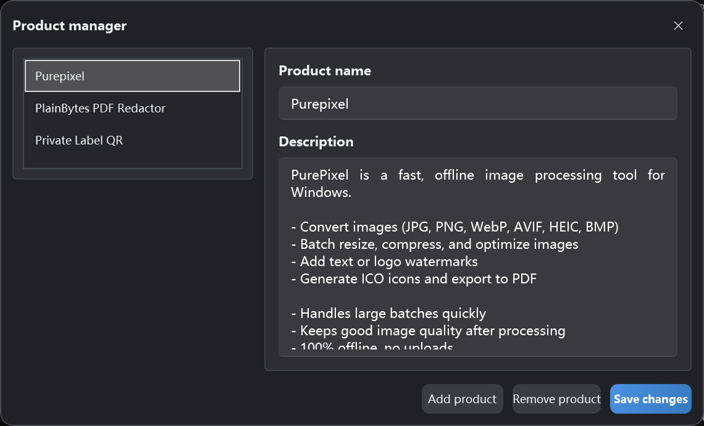

Clipboard-driven AI reply assistant
OmniReply User Guide
This guide explains OmniReply's interface, setup flow, AI reply generation, and write-back behavior. Start with the quick-start section, then return to feature details whenever you need more context.
1. Meet OmniReply
OmniReply is designed to reduce the gap between reading a message and writing a thoughtful reply. It helps you capture source text, generate a draft, review it, and type it back into the target app.
1.1 What OmniReply is
OmniReply is a Windows desktop AI reply assistant. It monitors copied text, combines it with your selected model, scene, language, style, reply goal, and length settings, then generates an editable reply. After reviewing the draft, you can write it back into another app's input field.
1.2 Common use cases
Social replies
Prepare natural replies for comments, messages, posts, and community conversations.
Customer support
Turn user questions into clear explanations, reassurance, next steps, or support replies.
Product recommendations
Use product information to create concise recommendations, feature explanations, and comparison replies.
1.3 Basic workflow

2. Interface and Feature Overview
Most daily work happens in the floating main window. The settings and product manager windows are mainly used when configuring OmniReply.
2.1 Main window
| Area | Purpose | Tip |
|---|---|---|
| Title bar | Shows the app name and current edition. The window can be collapsed into the floating ball. | Collapse the window when you want it out of the way while waiting for copied text. |
| Configuration area | Selects the model, scene, language, style, goal, length, and product. | After changing rules, regenerate the reply so the new settings are applied. |
| Source text area | Shows captured clipboard text and also accepts manual input. | Use it when copying is inconvenient or when you want to edit the source text first. |
| Reply area | Displays the generated AI reply and lets you edit it. | Always review facts, tone, and sensitive content before writing back. |
| Emoji bar | Inserts common emoji characters into the reply. | Inserted emoji are text characters, so they can still be edited or deleted. |
| Status bar | Controls clipboard monitoring, language, settings, about, and exit actions. | Turn on clipboard monitoring before using the automatic capture workflow. |

2.2 Floating ball status
When collapsed, OmniReply becomes a floating ball. You can drag it, double-click it to expand the main window, and use its appearance to understand the current service state. A colorful floating ball means clipboard monitoring is active. A gray floating ball means monitoring is off. While waiting for an AI response, the floating ball can also show a request-in-progress state.
2.3 Settings window
Model settings
Manage API keys, base URLs, and model names for OpenAI, Gemini, Grok, and DeepSeek.
Network settings
Enable a manual HTTP proxy when needed. If disabled, OmniReply uses the system proxy configuration.
Hotkey settings
Change the global hotkeys for showing the window, toggling monitoring, refreshing, and writing back.
File settings
Choose the history folder. If no folder is selected, history is not saved.
2.4 Product manager
The product manager stores product names and descriptions for the current profile. When the reply goal is product recommendation, the selected product description is sent as context so the generated reply can mention the product more accurately.

3. Quick Start
Follow these steps the first time you use OmniReply. After that, the daily workflow is usually just copy, review, and write back.
Add an API key
Open Settings and enter the API key for the AI service you want to use. You can leave unused providers empty. The currently selected model must have a valid key.
Set reply rules
Choose the model, scene, language, style, reply goal, and reply length. If you are preparing a product recommendation, also select the relevant product.
Start clipboard monitoring
Turn on the clipboard monitoring switch in the status bar, or press Ctrl + Shift + X.
Copy or enter source text
Copy a question, comment, or message from another app. You can also type or paste source text directly into OmniReply and regenerate manually.
Generate an AI reply
After new text is copied, OmniReply reads it and calls the selected model. To generate again, click Refresh or press Ctrl + Shift + R.
Review and edit
The reply box is editable. Adjust wording, remove unnecessary parts, add context, or insert emoji. Do not skip review just because the draft was generated by AI.
Write back to the target field
Click the target input field first so the cursor is in the right place. Then click Write Back or press Ctrl + Shift + Enter.
4. Feature Details
This section explains what each setting does and how it affects the final reply.
4.1 AI models and API keys
| Model option | Required setting | Description |
|---|---|---|
| ChatGPT (OpenAI) | OpenAI_Key |
Uses an OpenAI-compatible Chat Completions endpoint. You can configure the base URL and model name. |
| Gemini (Google) | Gemini_Key |
Uses Google Gemini. You can configure the Gemini base URL and model name. |
| Grok (xAI) | Grok_Key |
Uses xAI Grok. You can configure the base URL, model name, and system message. |
| DeepSeek (DeepSeek) | Deepseek_Key |
Supports OpenAI-compatible requests or DeepSeek reasoning-style request settings. |
The selected model determines which key is required. Providers you do not use can remain empty.
4.2 Reply rules
| Rule | Effect | Recommendation |
|---|---|---|
| Scene | Defines the platform or context of the reply, such as social media, forums, or support. | Choose the scene that best matches the real conversation. |
| Language | Controls the output language. Auto language tries to follow the source context. | Choose a specific language when the reply must be fixed to one language. |
| Style | Controls tone, persona, and wording. | For public comments, a natural, friendly, non-pushy style is usually safer. |
| Reply goal | Guides the intent of the reply, such as recommendation, support, explanation, or rebuttal. | Confirm the goal before generating because it strongly affects the draft. |
| Reply length | Controls whether the output should be short, medium, or detailed. | For social platforms, short or automatic length is usually a good starting point. |
4.3 Product recommendation data
Product recommendation data includes the product name and description. When a recommendation-related goal is selected, OmniReply sends the selected product description as context for the AI. A good product description should include:
- What problem the product solves.
- Core features and advantages.
- Who it is for and when it is useful.
- Whether it works offline, uploads data, or has important limitations.
- Clear, realistic wording that avoids exaggerated claims.
4.4 Clipboard monitoring
When monitoring is enabled, OmniReply listens for system clipboard updates and reads new text content. To reduce accidental triggers, it ignores empty text, repeated text, and copy operations made while the OmniReply window itself is active.
4.5 Editing and emoji
The reply area is an editable text box. You can rewrite AI-generated text directly or insert common Unicode emoji from the emoji bar or popup. Some systems or WPF controls may not display emoji in full color, but the inserted characters are still standard emoji characters.
4.6 Write-back and hotkeys
Write-back first hides the OmniReply window, waits briefly for the target field to regain focus, then simulates keyboard input character by character. Line breaks are handled with a simulated newline key. Default hotkeys are:
| Action | Default hotkey |
|---|---|
| Show or hide the main window | Ctrl + Shift + D |
| Start or stop clipboard monitoring | Ctrl + Shift + X |
| Regenerate the reply | Ctrl + Shift + R |
| Write back the reply | Ctrl + Shift + Enter |
4.7 History
After you select a history folder in file settings, OmniReply can save source text, generated replies, and request times. If the history folder is empty, no history is written.
5. Data, Privacy, and Licensing
OmniReply keeps settings and profile data on your device. AI requests are sent directly to the AI service you choose.
5.1 Locally stored data
| Data | Description | User-facing management |
|---|---|---|
| Application settings | Model endpoints, API keys, proxy settings, hotkeys, history settings, and related options. | View and edit them in the Settings window. |
| Profiles and product data | The current profile, product list, selected scene, and reply rules. | Manage them in the main window and the Product Manager. |
5.2 What AI requests include
When generating a reply, OmniReply sends the source text, current reply rules, necessary product context, and model request parameters to the selected AI service. Requests are made using your own API key. OmniReply does not route your requests through an intermediary server.
5.3 API key safety
- Do not share configuration files that contain API keys.
- On shared computers, make sure settings and history are handled appropriately before leaving.
- Before copying sensitive content, review the privacy and data handling policies of the AI service you selected.
- If no history folder is configured, OmniReply does not save source text or generated reply history.
5.4 Free and Pro editions
| Edition | Description |
|---|---|
| Free | Allows 10 model generations per local calendar day and may restrict some rule selections. |
| Pro | Unlocks Pro capabilities. Purchase and license status are shown in the app's license window. |
6. FAQ and Troubleshooting
If something does not work as expected, start here. Most issues are related to the monitoring switch, API keys, network or proxy settings, hotkey conflicts, or focus in the target input field.
6.1 Nothing happens after copying
Check the following in order:
- Make sure clipboard monitoring is enabled in the status bar.
- Make sure the copied content is plain text and is not empty.
- Check whether OmniReply is still waiting for the previous AI request to finish.
- Check whether the copied text is exactly the same as the previous captured text.
- Check whether you copied inside the OmniReply window. Copy operations from the active OmniReply window are ignored.
6.2 API key not configured
The selected model's provider does not have a key configured. Open Settings and enter the API key for that provider, or switch to a model whose provider is already configured.
6.3 AI request failed or timed out
Common causes include an invalid key, exhausted quota, service congestion, network issues, proxy misconfiguration, or request timeout. First confirm that your browser and system proxy can reach the target AI service, then check the base URL, model name, and API key in Settings.
6.4 The reply language or style is not what I expected
Check the language, scene, style, reply goal, and reply length. For OpenAI-compatible models, a fixed language is included in the system prompt. If the output is still inconsistent, select a specific target language and regenerate.
6.5 The reply was written to the wrong place
Before writing back, click the target input field and make sure the cursor is in the correct place. Write-back simulates keyboard input, so if focus is in another window or control, the reply will be typed there.
6.6 Hotkeys do not work
The hotkey may already be used by another app. Open the Hotkeys tab in Settings and choose a combination that includes Ctrl, Shift, Alt, or Win, while avoiding conflicts with system shortcuts.
6.7 Emoji display issues
On some systems, WPF text boxes may not reliably display emoji in color. Even if emoji appear monochrome in OmniReply, inserted and written-back emoji are usually standard Unicode emoji characters. Whether they appear in color in the target app depends on the target app and system font support.
6.8 History was not saved
History is saved only when a history folder is selected in file settings. An empty folder setting means no history is recorded. Make sure the folder exists and your user account can write to it.
6.9 What should I include in a support report?
Include the app version, Windows version, selected model, error message, whether you use a proxy, whether the issue is reproducible, the steps to reproduce it, and screenshots if helpful. Do not send real API keys.